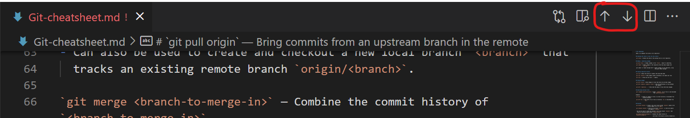
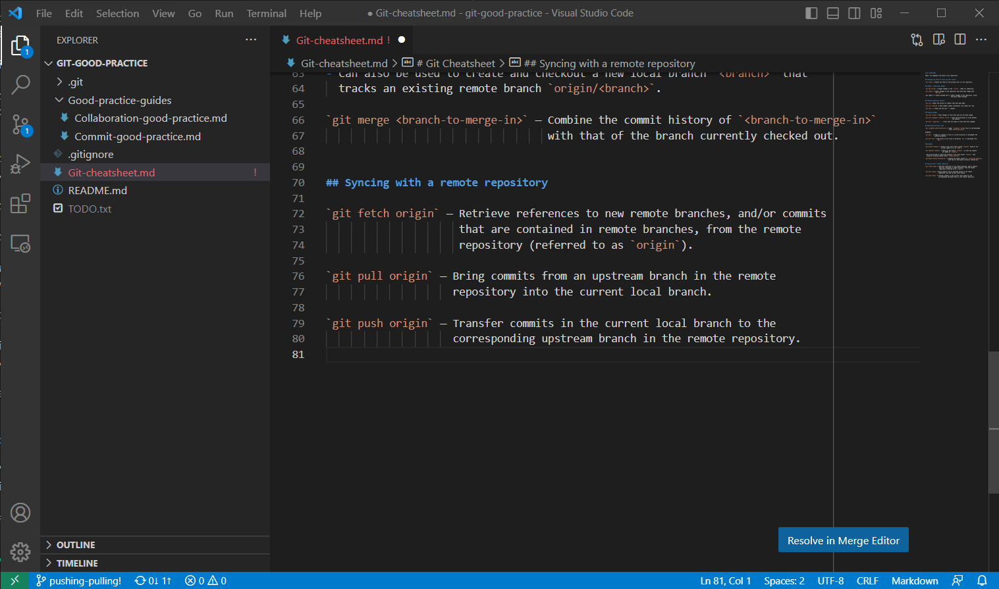

Merge Conflicts#
Learning objectives#
By the end of this episode, you will understand what a merge conflict and how these can be resolved, by working through a small example. You will also learn some general tips that can help you manage or avoid conflicts when collaborating with others on a common codebase.
What a merge conflict is and how it can arise#
Let’s suppose we have two branches, branch-a and branch-b, with branch-b
branching off of branch-a at commit C. As
commits get added to these two branches after C, it’s possible that a particular file
will be modified on both branches in ways that are incompatible. For example:
The same line in a file might get edited on both
branch-aandbranch-bin different ways.Some material may be added to a file on one branch while the file is deleted on the other branch.
In cases such as these, when we try to merge branch-b back into branch-a,
Git has no way of determining which edits are the ‘correct’ version to take forward: from
its point of view, it has no reason to say why one set of edits should be
preferred over the other. In this case, Git will say that the file contains a
merge conflict (or just a conflict), and it will require us
to further specify how the conflict should be resolved.
In this episode, we’re going to add some material to the cheatsheet in our
git-good-practice repository about pushing and pulling
branches, but in such a way as to engineer a merge conflict. We’ll then look at
how we could resolve it.
Cooking up a conflict#
We’ll start a new feature branch called pushing-pulling off of our last
commit to main. We create this on GitHub as a remote branch and then create
a local tracking branch:
$ git fetch
Username for 'https://github.com': jbloggs9999
Password for 'https://jbloggs9999@github.com':
From https://github.com/jbloggs9999/git-good-practice
* [new branch] pushing-pulling -> origin/pushing-pulling
$ git checkout pushing-pulling
Switched to a new branch 'pushing-pulling'
branch 'pushing-pulling' set up to track 'origin/pushing-pulling'.
Let’s now add the following content to Git-cheatsheet.md:
`git push origin` — Transfer commits in the current local branch to the
corresponding upstream branch in the remote repository.
`git pull origin` — Bring commits from an upstream branch in the remote
repository into the current local branch.
We commit these changes to the pushing-pulling feature branch and then push
them up to the upstream remote branch. Our log on pushing-pulling now looks
like the following:
$ git log --oneline -3
991a78b (HEAD -> pushing-pulling, origin/pushing-pulling) Add entries on 'git push' and 'git pull'
785f6f8 (origin/main, origin/HEAD, main) Merge pull request #3 from jbloggs9999/collaboration-good-practice
ee1617c Merge branch 'main' into collaboration-good-practice
Let’s now suppose that, while we were working on our pushing-pulling feature
branch, someone else pushed a commit to main that worked on the same section
of the Git-cheatsheet.md file. To emulate this scenario, we’ll switch to the
main branch, commit the following addition to our cheatsheet (note how the
order of the git push and git pull entries has swapped around) and push
those changes up to the remote main branch:
`git pull origin` — Bring commits from an upstream branch in the remote
repository into the current local branch.
`git push origin` — Transfer commits in the current local branch to the
corresponding upstream branch in the remote repository.
After doing that, our log looks like the following (note that we use the --all
option to view commits on all branches and display the log as a graph by using
the --graph option):
$ git log --oneline --graph --all -3
* 23e5d3a (HEAD -> main, origin/main, origin/HEAD) Add material about pulling and pushing branches
| * 991a78b (origin/pushing-pulling, pushing-pulling) Add entries on 'git push' and 'git pull'
|/
* 785f6f8 Merge pull request #3 from jbloggs9999/collaboration-good-practice
|\
Let’s now switch back to the feature branch and try merging main into it. If
we do that, we get the following output:
$ git checkout pushing-pulling
Switched to branch 'pushing-pulling'
Your branch is up to date with 'origin/pushing-pulling'.
$ git merge main
Auto-merging Git-cheatsheet.md
CONFLICT (content): Merge conflict in Git-cheatsheet.md
Automatic merge failed; fix conflicts and then commit the result.
This message may look scary, but don’t panic! In the next section, we’ll look at how to resolve this conflict.
Resolving the conflict#
Before doing anything else, let’s look at the current state of things with
git status:
$ git status
On branch pushing-pulling
Your branch is up to date with 'origin/pushing-pulling'.
You have unmerged paths.
(fix conflicts and run "git commit")
(use "git merge --abort" to abort the merge)
Unmerged paths:
(use "git add <file>..." to mark resolution)
both modified: Git-cheatsheet.md
no changes added to commit (use "git add" and/or "git commit -a")
Git is actually giving us quite a lot of helpful information here:
Firstly, it’s reminding us that we’re on the branch
pushing-pulling(we’ll need to keep this in mind).Secondly, it’s indicating that we’re in the middle of a merge (
You have unmerged paths.) and that there are conflicts that need resolving. It has listed out the files where conflicts have arisen (both modified: Git-cheatsheet.md). Note that we only have one file with conflicts in our example, but there could be multiple files more generally.It’s also giving us a clue (albeit somewhat vaguely) about how to complete the merge. For each file with conflicts, we need to:
Modify the file to fix the conflicts i.e. write in what we want the file to contain going forward.
Stage the fixed file with
git add(this will ‘mark the file as resolved’)
Then we need to commit our staged changes with
git commit. This will complete the merge process.Finally, it’s saying that if we want to abort and go back to how things were just before running
git merge, we can use the command
git merge --abort
Let’s now fix the conflicts within Git-cheatsheet.md. If we open up the file
in a text editor, we will see the following content towards the end of the file,
around the place where we added content about pushing and pulling:
## Syncing with a remote repository
`git fetch origin` — Retrieve references to new remote branches, and/or commits
that are contained in remote branches, from the remote
repository (referred to as `origin`).
<<<<<<< HEAD
`git push origin` — Transfer commits in the current local branch to the
corresponding upstream branch in the remote repository.
`git pull origin` — Bring commits from an upstream branch in the remote
repository into the current local branch.
=======
`git pull origin` — Bring commits from an upstream branch in the remote
repository into the current local branch.
`git push origin` — Transfer commits in the current local branch to the
corresponding upstream branch in the remote repository.
>>>>>>> main
Git has injected some text into our file to describe the conflicting changes that need to be resolved.
Understanding the representation of conflicts#
The content between the markers <<<<<<< HEAD and ======= contains the changes that were made on the current branch i.e. the changes as they are at HEAD. In contrast, the content between the markers ======= and >>>>>>> main represents the changes that have been made on the incoming branch, which in example above is main. (Of course, in the general case the incoming branch could be a different branch, in which case the name of this branch will be used in the third marker.)
In order to fix this conflict, we simply need to edit this text so that it contains only what we want to keep, just like we’d edit any other file. This gives us complete freedom to modify the conflicted region in any way we choose. In this case, we need to make a choice:
Do we stick with the version we added to our feature branch (i.e. the
HEADversion), wheregit pushcomes beforegit pull?Do we go for the version that appears on the
mainbranch, which has the two commands the other way around?Or do we keep some combination of the two sets of changes?
In our example, we only want to keep one set of changes, although it’s simply
a matter of taste which we go for. Let’s go for the second option, i.e. the
version as it is on main. All we therefore need to do is:
Delete all the content corresponding to the
HEADchange, i.e. delete the content between the<<<<<<< HEADand=======markers.Delete the lines corresponding to the merge conflict markers:
<<<<<<< HEAD,=======and>>>>>>> main.
Having done that, and having saved our changes to Git-cheatsheet.md, the
content of Git-cheatsheet looks like this:
## Syncing with a remote repository
`git fetch origin` — Retrieve references to new remote branches, and/or commits
that are contained in remote branches, from the remote
repository (referred to as `origin`).
`git push origin` — Transfer commits in the current local branch to the
corresponding upstream branch in the remote repository.
`git pull origin` — Bring commits from an upstream branch in the remote
repository into the current local branch.
Resolving a conflict#
Exactly how you resolve a conflict depends on the context. Sometimes you will want to accept incoming changes, other times you’ll want to keep the version on the current branch, and yet other times you may want to combine the changes in some way.
Multiple conflicts in a file#
If a file has multiple locations where there are conflicts then each one of these needs to be resolved. You can find them by doing a search for<<<<<<< HEAD or similar.
We’ve now fixed our cheatsheet file to the version we’d like to keep going
forward from the merge. The next step is to stage the changes, just like
git status told us before:
$ git add Git-cheatsheet.md
Let’s now check the status again:
$ git status
On branch pushing-pulling
Your branch is up to date with 'origin/pushing-pulling'.
All conflicts fixed but you are still merging.
(use "git commit" to conclude merge)
Changes to be committed:
modified: Git-cheatsheet.md
Git is telling us that we’re still in the middle of a merge but that there are
no outstanding files with conflicts left to resolve
(All conflicts fixed but you are still merging.) It also tells us that our
Git-cheatsheet.md file has changes to commit. This is as we’d expect, because
in resolving the conflict we opted for changes that differ to those we’d made
on our current branch. (If we’d instead opted to keep the version that was made
on our current branch, we wouldn’t have seen any changes staged for committal.)
Multiple conflicted files#
In general, you may have multiple files with conflicts when you merge. In this case, work through each file in turn, resolving the conflicts and staging the changes until all files have been addressed.
Since there are no more conflicts to resolve, we can now go ahead and commit our changes to complete the merge.
$ git commit
Note how we do this without providing a message at the command line, so that our text editor fires up for a commit message, with the following pre-loaded content:
Merge branch 'main' into pushing-pulling
# Conflicts:
# Git-cheatsheet.md
#
# It looks like you may be committing a merge.
# If this is not correct, please run
# git update-ref -d MERGE_HEAD
# and try again.
# Please enter the commit message for your changes. Lines starting
# with '#' will be ignored, and an empty message aborts the commit.
#
# On branch pushing-pulling
# Your branch is up to date with 'origin/pushing-pulling'.
There’s no problem in keeping this default message. We’ll point out here that some people like to additionally uncomment the list of conflicted files, to make explicit that there were merge conflicts that had to be resolved. We’ll just keep the default message, saving and closing our text editor to complete the commit:
$ git commit
[pushing-pulling c3d8b18] Merge branch 'main' into pushing-pulling
This completes the merging process. We can see the result of our merge on the
commit history of the pushing-pulling branch by looking at the commit graph:
$ git log --oneline --graph -4
* c3d8b18 (HEAD -> pushing-pulling) Merge branch 'main' into pushing-pulling
|\
| * 23e5d3a (origin/main, origin/HEAD, main) Add material about pulling and pushing branches
* | 991a78b (origin/pushing-pulling) Add entries on 'git push' and 'git pull'
|/
* 785f6f8 Merge pull request #3 from jbloggs9999/collaboration-good-practice
|\
Note that this graph is taken from the point of view of the pushing-pulling
branch, so it appears as the left-most vertical line of commits. Notice how
the merge of main into pushing-pulling is depicted at the most recent
commit.
From here, we can complete our feature branching protocol by pushing the changes
to our remote pushing-pulling branch and then closing a suitable pull request
on GitHub to merge the remote pushing-pulling branch into main. If we
hadn’t resolved the merge conflict locally first, then GitHub would tell us
that there are merge conflicts that need resolving before closing the pull request.
Because we’ve resolved the conflict locally, GitHub will happily allow the pull
request to be closed.
Resolving conflicts in VS Code#
Many text editors and IDEs have capabilities that help you view and resolve merge conflicts, or can be given these capabilities through third party extensions or plugins. Below we look at how the merge conflict in the previous section could have been resolved using the VS Code editor.
In the screenshot below, notice first how the left-hand Explorer pane has
the Git-cheatsheet.md file highlighted in red, with an exclamation mark next to it.
This is how VS Code marks files that have conflicts in them. Looking now at
the open Git-cheatsheet.md file, we see that VS Code has highlighted the places
where there is a conflict to resolve.

In addition to this, you can jump between unresolved conflicts using the arrows in the top right-hand corner of the editor pane:

To support the resolution of the conflicts themselves, VS Code provides some shortcut options above the conflict. These represent methods for resolution that apply in the majority of cases in practice:
Accept Current Change: Use the change arising from the current branch, i.e. as at
HEAD.Accept Incoming Change: Use the change from the incoming branch.
Accept Both Changes: Include both changes, in the order they appear.
Compare Changes: View the differences between the changes in a side-by-side view.

Clicking on one of these options will apply the specified resolution, ready to be saved. (The screenshot below shows the result from applying the Accept Incoming Change option.)

General advice on merge conflicts and collaboration#
There’s no silver bullet, or special branching strategy, for avoiding merge conflicts. The only way to avoid conflicts is to communicate with each other.
You want to avoid the situation where two people work on the same part of a file
in different branches, since this will cause a conflict when merging
the branches back into main.
The best way to avoid conflicts is to ensure different branches work on different files as much as possible. Admittedly, this is not always possible or practical. If you need to work on a file which may also be in the process of being edited in another branch, then you should flag this with collaborators and agree a way forward which integrates both sets of changes.
It’s also good practice to make sure everyone is aware when a feature branch
has been merged into main on the remote repository. This ensures everyone can
update their local repositories and make sure their work builds on top of the
latest version of the common codebase. GitHub can be set up so that collaborators
on a repository are notified when a new pull request is closed.
Finally, if you get a conflict when trying to merge main into a feature branch
and the incoming changes affect the correctness of what you’re doing, then
have a call with the person whose work has caused the conflict, to discuss the
problem and agree how you will resolve the conflict to move forward.